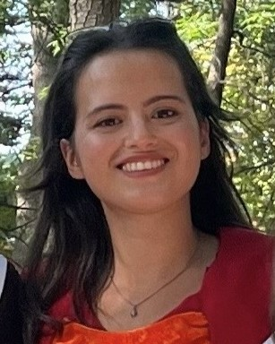

Aytöre Arıkan
M.Sc. Student in Chemical Engineering
Middle East Technical University (METU), Ankara, Turkey
Email: aaytore@metu.edu.tr
Education
- M.Sc. in Chemical Engineering, METU, 2023 – Present, CGPA: 3.57
- B.Sc. in Chemical Engineering, METU, 2019 – 2023, CGPA: 3.35
Research Experience
- Graduate Researcher, METU, 2023 – Present
Thesis on investigation of the performance of nanofiltration membranes in the separation of uncharged organic molecules and salts in aqueous solutions under Prof. Dr. Pınar Zeynep Çulfaz Emecen, for SOCAR Turkey.
- Undergraduate Researcher, Bilkent University, 2022 – 2023
Simulations with LAMMPS for Janus particles under thermophoresis, TUBITAK STAR Project.
- Undergraduate Researcher, METU Statistics, 2021 – 2022
Big data projects in R and Unix under Assoc. Prof. Fulya Gökalp Yavuz.
Internships
- Turkish Aerospace Industries – Production Intern, 2022
- SOCAR Turkey – STAR Refinery – Production Intern, 2021
Skills
- Programming: Python, MATLAB, LAMMPS, Simulink, ASPEN Plus, LaTeX
- Tools: Ovito, Microsoft Office, NX Siemens (basic)
- Soft Skills: Scientific writing, mythology research, global politics
- Languages: English, French, German
Certificates
- IBM – Python Basics for Data Science
- IBM – Analyzing Data with Excel
- IBM – AI for Everyone
- FedericaX – Global Politics
Projects
- METU Generation (2021): Data science workshops and hands-on projects
- IEEE Blog Series (2020): Coverage of Nobel-winning lithium-ion battery research
- Ministry of Education (2017): Drug awareness workshop for youth